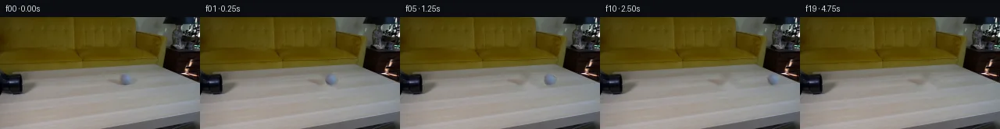

![首帧]()

Round 00
2026-11-04T20:25:22.984242+00:00像素候选变化代码 +150/−0inspection 更新
pixels 30d5561058d46baf · code 16cba0a646f50fb1
查看本轮 generate.py 真实 diff
--- previous/generate.py +++ current/generate.py @@ -0,0 +1,150 @@ +from pathlib import Path + +import cv2 +import numpy as np +from PIL import Image, ImageDraw + +import artifact_io + + +ROOT = Path(__file__).resolve().parent +W, H = 256, 144 +N_FRAMES = 20 +BALL_CX0, BALL_CY = 162, 80 +BALL_RADIUS = 8.2 + + +def clean_table_plate(source: np.ndarray) -> np.ndarray: + """Remove the original ball and its contact shadow from a small table patch.""" + mask = np.zeros((H, W), np.uint8) + cv2.circle(mask, (BALL_CX0, BALL_CY), 10, 255, -1, lineType=cv2.LINE_AA) + cv2.ellipse(mask, (BALL_CX0 + 1, BALL_CY + 8), (14, 4), 0, 0, 360, + 255, -1, lineType=cv2.LINE_AA) + # Telea uses only local pixels surrounding the masked tabletop area. + plate = cv2.inpaint(source, mask, 4.0, cv2.INPAINT_TELEA) + return plate + + +def make_ball_components(source: np.ndarray): + """Extract fixed illumination and rotatable fine texture from the source ball.""" + half = 11 + patch = source[BALL_CY-half:BALL_CY+half+1, + BALL_CX0-half:BALL_CX0+half+1].astype(np.float32) + fixed_light = cv2.GaussianBlur(patch, (0, 0), 1.15) + fine_texture = patch - fixed_light + + yy, xx = np.mgrid[-half:half+1, -half:half+1].astype(np.float32) + dist = np.sqrt(xx * xx + yy * yy) + # One-pixel antialiased rim. + alpha = np.clip(BALL_RADIUS + 0.65 - dist, 0.0, 1.0) + # A tiny cool-grey nap variation prevents the moving ball looking flat. + nap = (0.9 * np.sin(xx * 1.71 + yy * 0.83) + + 0.5 * np.cos(xx * 0.57 - yy * 1.43))[..., None] + nap *= np.clip(1.0 - dist[..., None] / BALL_RADIUS, 0.0, 1.0) + fixed_light = fixed_light + nap + return fixed_light, fine_texture, alpha + + +def darken_with_shadow(frame: np.ndarray, cx: int, cy: int) -> None: + """Apply a compact, feathered contact shadow directly beneath the ball.""" + x0, x1 = max(0, cx - 13), min(W, cx + 14) + y0, y1 = max(0, cy + 4), min(H, cy + 13) + if x0 >= x1 or y0 >= y1: + return + yy, xx = np.mgrid[y0:y1, x0:x1] + dx = (xx - (cx + 1.0)) / 9.2 + dy = (yy - (cy + 7.7)) / 2.25 + opacity = 0.19 * np.exp(-2.0 * (dx * dx + dy * dy)) + region = frame[y0:y1, x0:x1].astype(np.float32) + # Warm ambient fill remains in the shadow rather than using neutral black. + shadow_tint = np.array([72.0, 69.0, 67.0], np.float32) + frame[y0:y1, x0:x1] = np.clip( + region * (1.0 - opacity[..., None]) + shadow_tint * opacity[..., None], + 0, 255).astype(np.uint8) + + +def composite_ball(frame: np.ndarray, cx: int, cy: int, distance: float, + fixed_light: np.ndarray, fine_texture: np.ndarray, + alpha: np.ndarray) -> None: + """Composite the source-derived ball; rotate only texture, not illumination.""" + size = fixed_light.shape[0] + half = size // 2 + angle = -(distance / BALL_RADIUS) * 180.0 / np.pi + matrix = cv2.getRotationMatrix2D((half, half), angle, 1.0) + rotated = cv2.warpAffine( + fine_texture, matrix, (size, size), flags=cv2.INTER_CUBIC, + borderMode=cv2.BORDER_REFLECT_101) + sprite = np.clip(fixed_light + rotated, 0, 255) + + dst_x0, dst_x1 = max(0, cx - half), min(W, cx + half + 1) + dst_y0, dst_y1 = max(0, cy - half), min(H, cy + half + 1) + if dst_x0 >= dst_x1 or dst_y0 >= dst_y1: + return + src_x0, src_x1 = dst_x0 - (cx - half), dst_x1 - (cx - half) + src_y0, src_y1 = dst_y0 - (cy - half), dst_y1 - (cy - half) + a = alpha[src_y0:src_y1, src_x0:src_x1, None] + bg = frame[dst_y0:dst_y1, dst_x0:dst_x1].astype(np.float32) + fg = sprite[src_y0:src_y1, src_x0:src_x1] … diff truncated; 63 more lines …